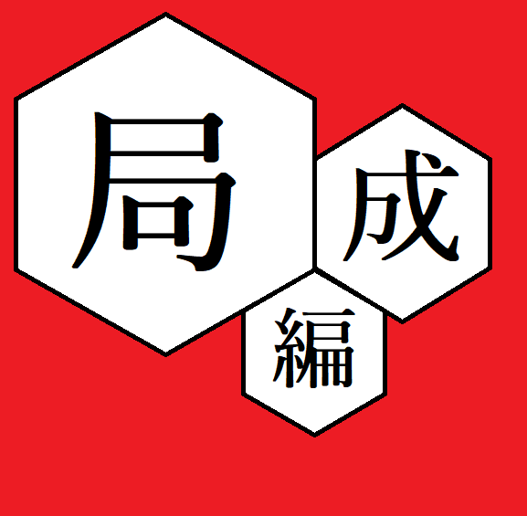
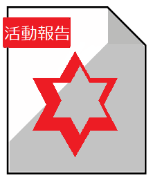

<ons-page>
        
    <ons-toolbar>
        <div class="left">
            <ons-toolbar-button onclick="fn.open()">
                <ons-icon icon="ion-navicon, material:md-menu"></ons-icon>
            </ons-toolbar-button>
        </div>
        
        <div class="center">
          運実
        </div>
      </ons-toolbar>
      
    <!-- 局編成の画像とテキスト -->
    <div style="position: absolute; top: 10px; left:20px;">
        
    </div>
    <div style="position: absolute; top: 140px; left:27px;">
        <p><font size="+1">局編成</font></p>
    </div>
    <div style="position: absolute; top: 170px; left:27px;">
        <p><font size="-1"><span style="opacity: 0.6;">運実の局編成について</font></span></p>
    </div>
    
    <!-- 活動報告の画像とテキスト -->
    <div style="position: absolute; top: 10px; right:30px;">
        
    </div>
    <div style="position: absolute; top: 140px; right:90px;">
        <p><font size="+1">活動報告</font></p>
    </div>
    <div style="position: absolute; top: 170px; right:70px;">
        <p><font size="-1"><span style="opacity: 0.6;">運実の活動報告</font></span></p>
    </div>
    
    <!-- 応援団の画像とテキスト -->
    <div style="position: absolute; top: 230px; left:20px;">
        
    </div>
    <div style="position: absolute; top: 360px; left:27px;">
        <p><font size="+1">応援団</font></p>
    </div>
    <div style="position: absolute; top: 390px; left:27px;">
        <p><font size="-1"><span style="opacity: 0.6;">各組応援団について</font></span></p>
    </div>
</ons-page>